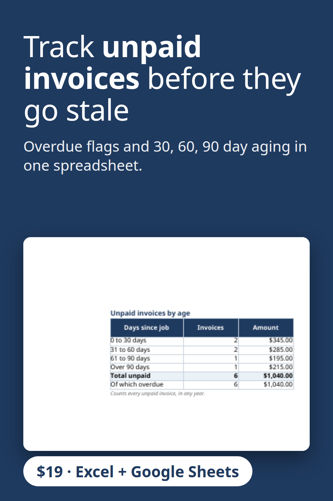

Keep track of who still owes you money. This small business spreadsheet marks every invoice Paid, Unpaid or Overdue, counts the days unpaid and groups what is owed by age: 0 to 30, 31 to 60, 61 to 90 and over 90 days. Part of a full bookkeeping and profit dashboard for Excel and Google Sheets. $19.
Get the $19 version on Gumroad
Built with the help of AI tools, then tested: every report number was recalculated separately.